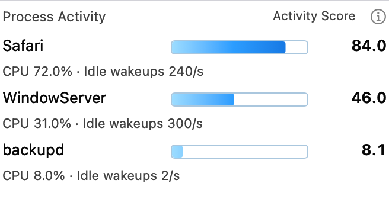
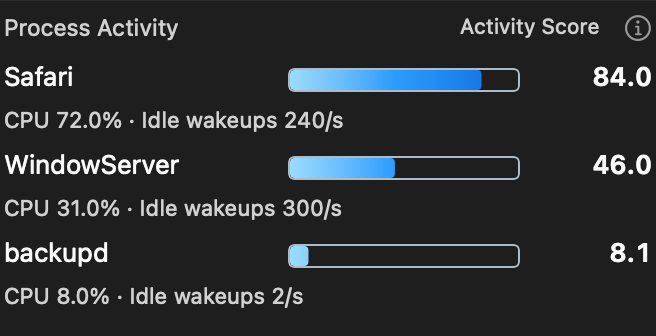
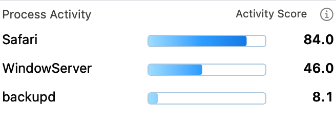
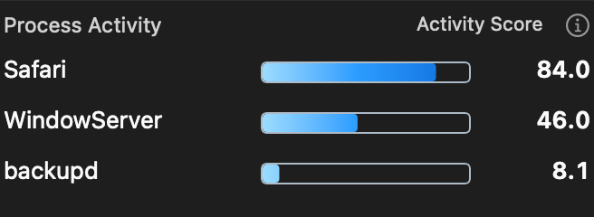
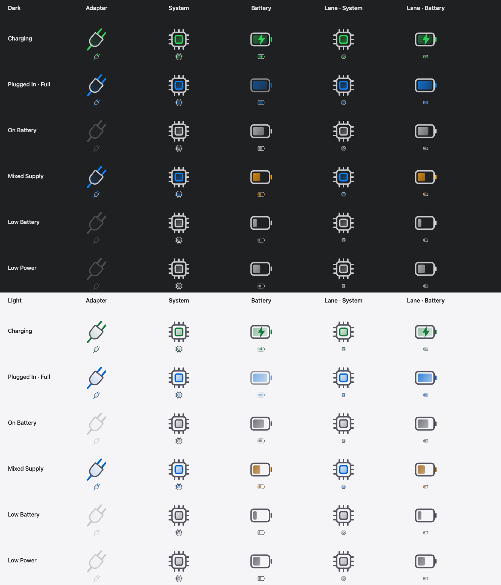

Approved design gallery
Blue-accented vector artwork and a clearer view of process activity. This gallery gathers the approved interface designs introduced since the previous public release, 4.3.8.
Every image is a native offscreen render of production views or drawing paths. These are design previews with illustrative fixtures, not screenshots of the running app.
Process Activity
Top N processes, with three shown by default. The horizontal gradient spans a fixed 0–100 scale and reveals only the portion up to each score. A small Off/On dropdown in Modules settings enables Compact view.
Detailed · Light

Detailed · Dark

Compact · Light

Compact · Dark

Activity Score combines CPU usage and idle wakeups. Higher scores indicate greater process activity, not measured power consumption. These fixed example values are not live measurements or percentages of battery use.
A consistent Settings icon family
Rounded neutral contours, blue accents and restrained static fades. The previews show enlarged artwork and its actual display size. Modules can be reordered, with Restore Default Order available.


Power artwork across supply states
Energy Flow and Power Lanes share the same editable Adapter, System and Battery artwork. Charging uses green, plugged-in states use blue, mixed supply uses amber for battery assistance, and on-battery adapter artwork is neutral and dimmed.

Editable SVG originals
Version-labeled source packages, copied from the artwork used by Wattson 4.3.19. SVG masters remain vector-only, without embedded bitmaps or external resources.
Asset provenance · Design checksums · Rendering notes
Design attachments are separate from installer assets. Installation and signing details are on the GitHub release page.